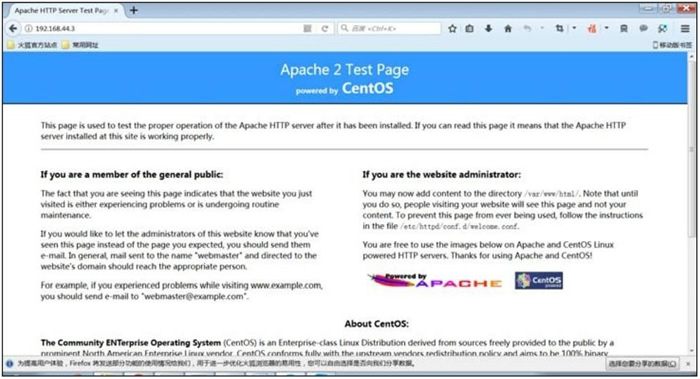

Linux RPM包安装、卸载和升级（rpm命令）详解
我们以安装 apache 程序为例。因为后续章节还会介绍使用源码包的方式安装 apache 程序，读者可以直观地感受到源码包和 RPM 包的区别。
RPM包默认安装路径
通常情况下，RPM 包采用系统默认的安装路径，所有安装文件会按照类别分散安装到表 1 所示的目录中。| 安装路径 | 含 义 |
|---|---|
| /etc/ | 配置文件安装目录 |
| /usr/bin/ | 可执行的命令安装目录 |
| /usr/lib/ | 程序所使用的函数库保存位置 |
| /usr/share/doc/ | 基本的软件使用手册保存位置 |
| /usr/share/man/ | 帮助文件保存位置 |
RPM 包的默认安装路径是可以通过命令查询的。
除此之外，RPM 包也支持手动指定安装路径，但此方式并不推荐。因为一旦手动指定安装路径，所有的安装文件会集中安装到指定位置，且系统中用来查询安装路径的命令也无法使用（需要进行手工配置才能被系统识别），得不偿失。
与 RPM 包不同，源码包的安装通常采用手动指定安装路径（习惯安装到 /usr/local/ 中）的方式。既然安装路径不同，同一 apache 程序的源码包和 RPM 包就可以安装到一台 Linux 服务器上（但同一时间只能开启一个，因为它们需要占用同一个 80 端口）。
实际情况中，一台服务器几乎不会同时包含两个 apache 程序，管理员不好管理，还会占用过多的服务器磁盘空间。
RPM 包的安装
安装 RPM 的命令格式为：[root@localhost ~]# rpm -ivh 包全名
注意一定是包全名。涉及到包全名的命令，一定要注意路径，可能软件包在光盘中，因此需提前做好设备的挂载工作。此命令中各选项参数的含义为：
- -i：安装（install）;
- -v：显示更详细的信息（verbose）;
- -h：打印 #，显示安装进度（hash）;
例如，使用此命令安装 apache 软件包，如下所示：
[root@localhost ~]# rpm -ivh \
/mnt/cdrom/Packages/httpd-2.2.15-15.el6.centos.1.i686.rpm
Preparing...
####################
[100%]
1:httpd
####################
[100%]
此命令还可以一次性安装多个软件包，仅需将包全名用空格分开即可，如下所示：
[root@localhost ~]# rpm -ivh a.rpm b.rpm c.rpm
如果还有其他安装要求（比如强制安装某软件而不管它是否有依赖性），可以通过以下选项进行调整：
- -nodeps：不检测依赖性安装。软件安装时会检测依赖性，确定所需的底层软件是否安装，如果没有安装则会报错。如果不管依赖性，想强制安装，则可以使用这个选项。注意，这样不检测依赖性安装的软件基本上是不能使用的，所以不建议这样做。
- -replacefiles：替换文件安装。如果要安装软件包，但是包中的部分文件已经存在，那么在正常安装时会报"某个文件已经存在"的错误，从而导致软件无法安装。使用这个选项可以忽略这个报错而覆盖安装。
- -replacepkgs：替换软件包安装。如果软件包已经安装，那么此选项可以把软件包重复安装一遍。
- -force：强制安装。不管是否已经安装，都重新安装。也就是 -replacefiles 和 -replacepkgs 的综合。
- -test：测试安装。不会实际安装，只是检测一下依赖性。
- -prefix：指定安装路径。为安装软件指定安装路径，而不使用默认安装路径。
apache 服务安装完成后，可以尝试启动：
[root@localhost ~]# service 服务名 start|stop|restart|status
各参数含义：- start：启动服务；
- stop：停止服务；
- restart：重启服务；
- status: 查看服务状态；
例如：
[root@localhost ~]# service httpd start #启动apache服务
服务启动后，可以查看端口号 80 是否出现。命令如下：
[root@localhost ~]# netstat -tlun | grep 80
tcp 0 0 :::80:::* LISTEN

图 2 apache测试页
RPM包的升级
使用如下命令即可实现 RPM 包的升级：[root@localhost ~]# rpm -Uvh 包全名
-U（大写）选项的含义是：如果该软件没安装过则直接安装；若已经安装则升级至最新版本。[root@localhost ~]# rpm -Fvh 包全名
-F（大写）选项的含义是：如果该软件没有安装，则不会安装，必须安装有较低版本才能升级。RPM包的卸载
RPM 软件包的卸载要考虑包之间的依赖性。例如，我们先安装的 httpd 软件包，后安装 httpd 的功能模块 mod_ssl 包，那么在卸载时，就必须先卸载 mod_ssl，然后卸载 httpd，否则会报错。软件包卸载和拆除大楼是一样的，本来先盖的 2 楼，后盖的 3 楼，那么拆楼时一定要先拆除 3 楼。
如果卸载 RPM 软件不考虑依赖性，执行卸载命令会包依赖性错误，例如：
[root@localhost ~]# rpm -e httpd
error: Failed dependencies:
httpd-mmn = 20051115 is needed by (installed) mod_wsgi-3.2-1.el6.i686
httpd-mmn = 20051115 is needed by (installed) php-5.3.3-3.el6_2.8.i686
httpd-mmn = 20051115 is needed by (installed) mod_ssl-1:2.2.15-15.el6.
centos.1.i686
httpd-mmn = 20051115 is needed by (installed) mod_perl-2.0.4-10.el6.i686
httpd = 2.2.15-15.el6.centos.1 is needed by (installed) httpd-manual-2.2.
15-15.el6.centos.1 .noarch
httpd is needed by (installed) webalizer-2.21_02-3.3.el6.i686
httpd is needed by (installed) mod_ssl-1:2.2.15-15.el6.centos.1.i686
httpd=0:2.2.15-15.el6.centos.1 is needed by(installed)mod_ssl-1:2.2.15-15.el6.centos.1.i686
RPM 软件包的卸载很简单，使用如下命令即可：
[root@localhost ~]# rpm -e 包名
-e 选项表示卸载，也就是 erase 的首字母。RPM 软件包的卸载命令支持使用“-nocteps”选项，即可以不检测依赖性直接卸载，但此方式不推荐大家使用，因为此操作很可能导致其他软件也无法征程使用。
关注公众号「站长严长生」，在手机上阅读所有教程，随时随地都能学习。内含一款搜索神器，免费下载全网书籍和视频。

微信扫码关注公众号